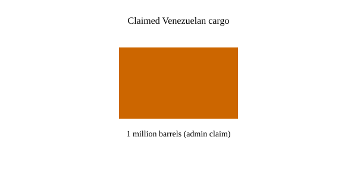

Texas · energy policy · 27–28 October 2026
President Trump highlighted a Venezuelan oil tanker and announced the termination of a 2023 methane rule at Texas campaign events.

What is agreed across desks
On 27 October President Donald Trump appeared at campaign events in Corpus Christi and Lubbock, Texas, in support of Republican Senate candidate Ken Paxton. At the Corpus Christi stop, near the Port of Corpus Christi, he pointed to a tanker he said carried one million barrels of Venezuelan crude and described it as the first shipment under an August agreement that grants the United States access to a portion of Venezuelan reserves. Later in Lubbock he said he was terminating a Biden-era methane regulation issued in 2023 that required oil and gas operators to reduce emissions. AP, Reuters and local Texas outlets report both statements. The midterm election is on 3 November; Texas is one of the states where Senate control is in play. Gas prices have been elevated since the Iran conflict.
The checkable elements are the locations of the events, the identities of the candidates, the existence of the 2023 methane rule, and the administration’s public description of the Venezuelan arrangement. Independent confirmation of the exact volume on the specific tanker was not published in the initial wire accounts. The EPA has not yet issued a final rule implementing the announced termination; the announcement is the administration’s statement of intent.
What is only a quote
“I’m officially terminating Biden’s expensive and unnecessary methane regulations to save consumers and energy producers $45 billion” is a presidential sentence. The $45 billion and the 210-million-barrel production figure are administration claims. They have not been independently verified in the reporting examined here. “The oil on the ships outside is being provided to the United States at zero cost to the American taxpayer” is likewise a claim about the commercial terms. “Gasoline and diesel prices will soon come down” is a prediction, not a present measurement. Outlets that report these sentences as the president’s words and label them as such score higher on complicity than outlets that present them as established facts about the world.
Mechanism a reader needs
Methane is a greenhouse gas with a higher short-term warming potential than carbon dioxide. The 2023 rule set requirements for leak detection and repair, flaring limits and other controls on new and existing oil and gas facilities. Rolling it back would change the compliance obligations of operators. Whether that produces the stated cost savings or the stated production increase depends on engineering assumptions, enforcement, and market conditions; those calculations are not yet public in a technical document accompanying the announcement. Venezuelan crude is heavy and sulfur-rich; U.S. Gulf Coast refineries are configured to process it. An increase in available barrels can affect the marginal supply available to those refineries, but the effect on retail gasoline prices also depends on refining capacity, inventories, global demand and other crude streams. One million barrels is a single cargo; the United States consumes roughly 20 million barrels per day of petroleum products. Scale matters for any price effect.
Campaign events are political speech. They are timed to the election calendar. The presence of a tanker in view of a rally does not by itself establish the commercial terms of the cargo or the volume. Those terms, if they exist, would be in contracts or shipping documents not released with the speech. The methane announcement, if followed by a formal EPA action, would be subject to the ordinary rulemaking process, including notice and comment, unless the administration claims an exemption. That process had not been completed on the morning of 28 October.
Texas produces a large share of U.S. oil and gas. Senate races there have national implications for control of the chamber. Energy prices have been a central voter concern since the Iran conflict raised the cost of fuels. Those are background facts. They do not convert a campaign claim into a verified production or price outcome.
What this story is not
It is not proof that one million barrels arrived or that the oil was free. It is not a completed regulatory repeal. It is not a measurement of future gasoline prices. The photograph is a type image of an oil tanker; it is not the vessel cited at Corpus Christi and not a picture of the rally crowd.

Source articles and scores
| Outlet | Headline | T | N | C |
|---|---|---|---|---|
| AP | Live updates: Trump makes final push to keep Texas in GOP hands | 94 | 0 | 100 |
| Reuters | Trump promotes oil production in Texas, where Democrats dream of breakthrough | 93 | 0 | 98 |
| The Guardian | Trump tells Texas campaign rally crowd he’s rolling back environmental rules | 90 | -5 | 90 |
Images: Wikimedia Commons type photograph of an oil tanker. Caption states it is not the event vessel. onerror falls back to committed SVG. No news-agency pixels used as the sole source.